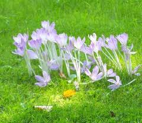

Colchique

Colchique (Colchicum autumnale de la famille des Liliacées)
Attention : hautement toxique par ingestion pour le Korat !
Partie toxique pour les chats en général et le Korat en particulier :
Toute la plante (même la fleur) fraîche ou sèche (foin), mais surtout corme et graines.
Symptômes du processus pathologique :
Après 2 à 48h de latence, on observe du ptyalisme, des coliques avec épreintes, ténesme et diarrhée blanchâtre, de l'inrumination. S'ajoutent parfois une hyperthermie modérée, une déshydratation rapide (d'où enophtalmie, tachycardie, agalaxie totale) et même un décubitus évoluant vers une paralysie sensitive et motrice (paralysie vésicale souvent présente) ; dans les cas graves, la mort survient en quelques heures à quelques jours par paralysie respiratoire.
Lésions : gastro-entérite avec ulcérations de la caillette et de l'intestin grêle, congestion et dégénérescence rénale.
Origine de la toxicité (principe actif) :
Divers alcaloïdes dont la colchicine et un glucoside (le colchicoside)